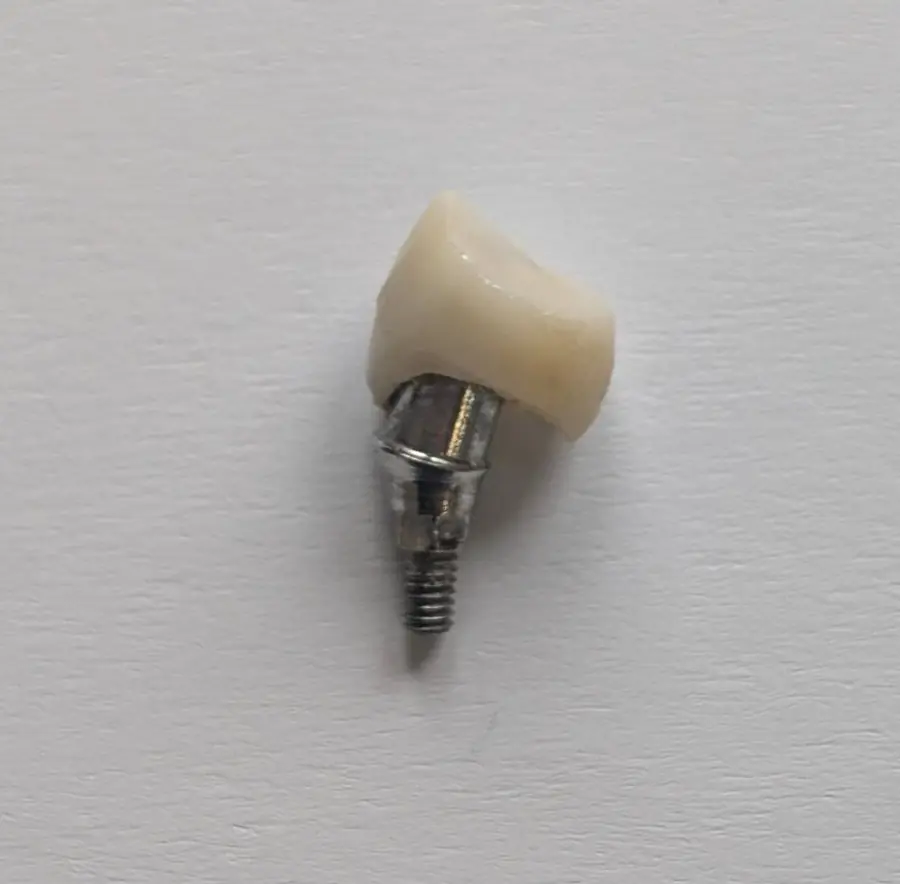

نسخه استخراجشده؛ ترجمه یا تأیید علمی انجام نشده است. وضعیت: captured
بیماری با شکایت از افتادن مکرر روکش ایمپلنت آمده است. روکش و اباتمنت را دندانپزشک دیگری ساخته و کیفیت تطابق، فیت و طراحی پروتز بهقدری ضعیف است که حتی در نگاه اول، عدم هماهنگی روکش با اباتمنت کاملاً مشخص است. از کجا شروع میکنی؟

بعضی بازسازیها فقط یک «روکش ناموفق» نیستند؛ نشانهایاند از اینکه در لایههای عمیقتر درمان هم باید با احتیاط نگاه کرد.
وقتی کیفیت پروتز تا این حد پایین است، دیگر نمیتوان با اطمینان فرض کرد که جراحی، پوزیشن ایمپلنت یا حتی انتخاب سیستم ایمپلنت درست انجام شدهاند. وقتی جراح را نمیشناسی و تنها چیزی که از کار قبلی در دست داری یک پروتز ضعیف است، باید فرض کنی هر لایهی پنهان درمان هم میتواند به همان اندازه ضعیف باشد.
قبل از هر تصمیمی، اولین سؤال برند ایمپلنت است؛ نه صرفاً برای سفارش قطعه، بلکه برای اینکه اصلاً مشخص شود امکان ادامهی درمان وجود دارد یا نه.
در بسیاری از کیسهای ریفرال، قبل از هر قالبگیری یا طراحی جدید باید بدانی:
این سؤالها فقط جنبهی لجستیکی ندارند. پاسخشان تعیین میکند آیا منطقی است هزینهای روی دوش بیمار گذاشته شود، حتی هزینهی رادیوگرافی. اگر همان ابتدا مشخص شود سیستم در دسترس نیست یا کار قابل ادامه نیست، دستکم بیمار بدون هزینهی اضافه از مطب بیرون میرود.
مرحلهی بعد، درخواست CBCT جدید از ناحیه است؛ نه فقط برای بررسی استخوان، بلکه برای ارزیابی کلی وضعیت ایمپلنت، زاویه، عمق، ساپورت استخوانی و ثبت مستندات درمانی بیمار. گاهی سیتیاسکن فقط ابزار تشخیص نیست؛ ابزار تصمیمگیری است، برای اینکه: «آیا این کیس باید ادامه پیدا کند؟»
وقتی جراح کیس را نمیشناسی، وارث تصمیمهای کسی میشوی که هیچوقت نخواهی دید. و از لحظهای که درمان را شروع کنی، در ذهن بیمار تو درمانگر آن ایمپلنت میشوی؛ با تمام عواقبی که ممکن است بعدها ظاهر شود.
شاید یکی از مهمترین بخشهای درمان ایمپلنت، توانایی «شروع نکردن» بعضی درمانها باشد.
نوع سؤال: ساخت کلمه · 4 خانه
حروف منبع: ث · ا · ر · و